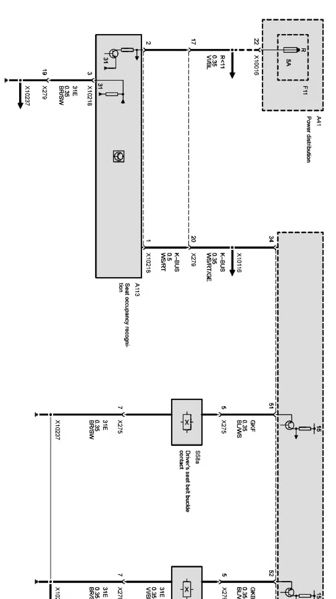
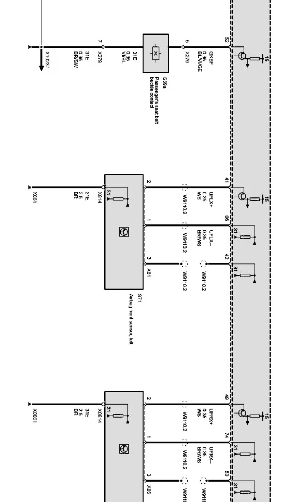
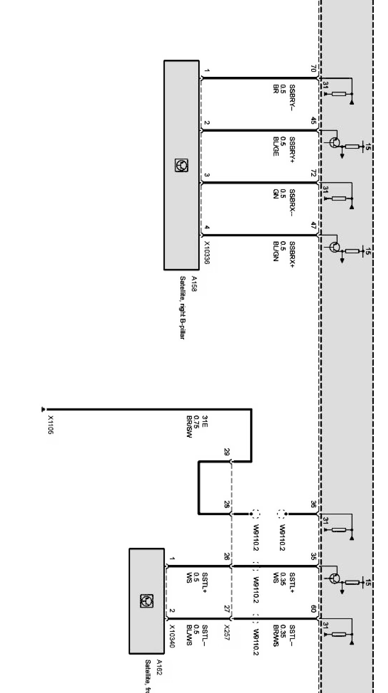
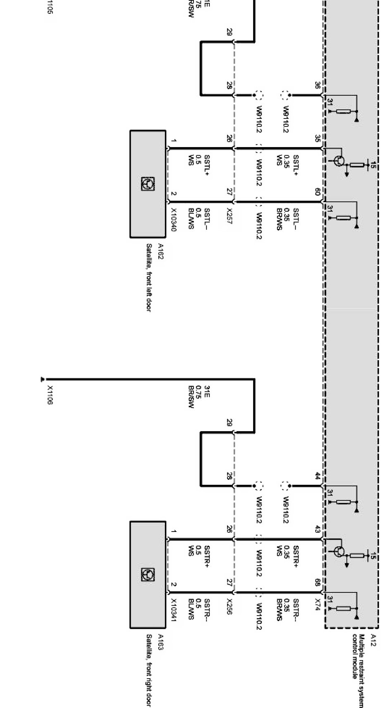

Operation CHARM
: Car repair manuals for everyone.
Home
>>
BMW
>>
2007
>>
X3 3.0si (E83) L6-3.0L (N52K)
>>
Repair and Diagnosis
>>
Diagrams
>>
Electrical Diagrams
>>
Body
>>
Safety Functions (X Series_X3-E83)
>>
Sensors and Switches
>>
Airbag Sensors (USA_LHD Up to 09/06)
Airbag Sensors (USA_LHD Up to 09/06)
Airbag sensors Part 1:

Airbag sensors Part 2:

Airbag sensors Part 3:
Airbag sensors Part 4:

Airbag sensors Part 5:
